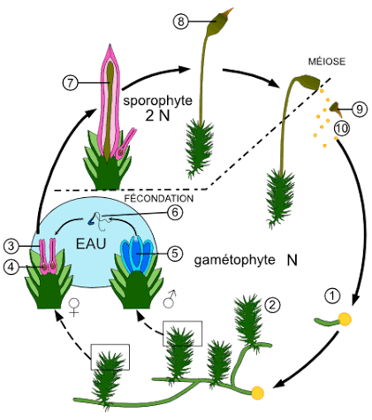
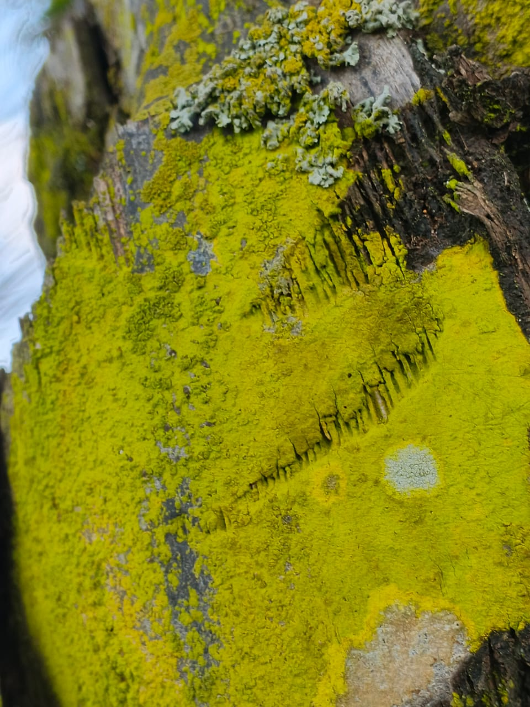

Mousses
Les premières plantes à coloniser la terre ferme
Appareil végétatif
- Phyllides (feuilles) : petites feuilles qui captent la lumière et absorbent l’eau directement.
- Caulide (tige) : tige fine qui porte les phyllides et permet à la mousse de se dresser légèrement.
- Rhizoïdes : filaments qui fixent la mousse au sol ou aux rochers, sans véritable fonction d’absorption.

Reproduction

Observation sur terrain

Espèce : Mousses,Lichens
Milieu : Humide,ombre, tronc
GPS : 6.8907338 ; -5.2259397
Date : 21/11/2026